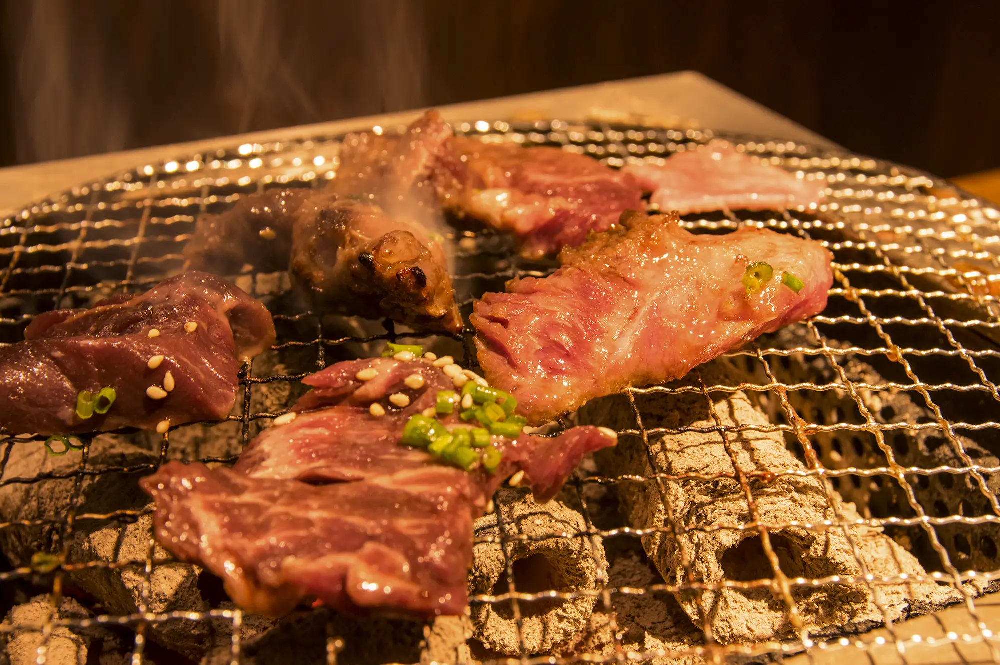
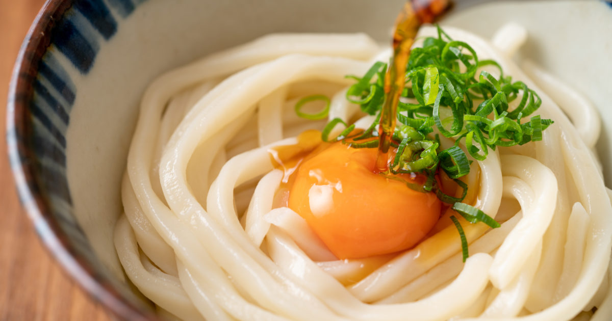
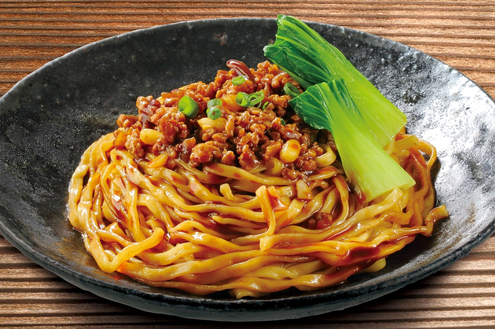
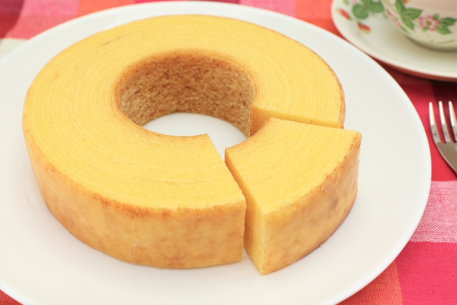
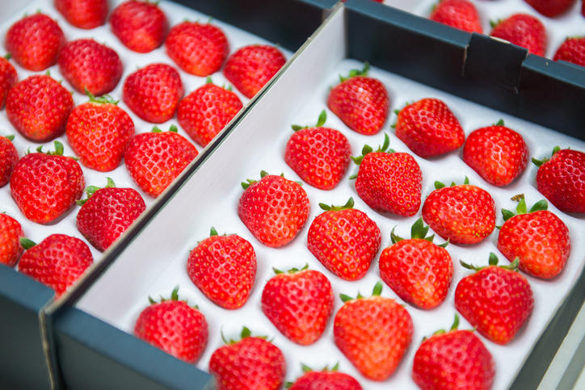

食べたいもの
お肉
ハンバーグ
このハンバーグは、たまたま行ってみたときのハンバーグの写真です。
ハンバーグの一番好きなとこのはやっぱり切ってみると肉汁が出てくるところです。

焼肉
好きなには、カルビとハラミが好きです。
最近は、焼肉に行く機会がなかなかないので食べたいです。
出典：Photock
麺類

うどん
特に、讃岐うどんが好きです。
讃岐うどんなどは香川県が有名だそうなので本場のうどんを食べてみたいです。
出典：ローカルファン

汁なし担々麺
担々麵は、個人的には汁なしの方が好きです。
汁なし担々麺は少し辛いぐらいがちょうどいいと思っています。
出典：理研ビタミン株式会社
スイーツ

バームクーヘン
バームクーヘンの形が好きだし食べたときの感触が好きです。
バームクーヘンとバウムクーヘンはニュアンスだけの違いではないのだとか
出典：ひよこさんぽ
イチゴパフェ
食べてみたいイチゴパフェ
写真のパフェはほぼイチゴのような気がしますがこのぐらい多い方がうれしい。
出典：CREA
果物
パイナップル
パイナップルは、甘酸っぱくてビタミンC、ビタミンB1、マンガン、銅、食物繊維などの栄養素が豊富です。
それに加えこれらの栄養素には、抗酸化作用、疲労回復、消化促進、などなど健康もよくとてもおいしい果物です。
出典：オリーブノート

イチゴ
イチゴは、高級なもので一粒50,000円もするものがあるそうです。
自分は、小さいときにいちご狩りに行った限りでまた行きたいなと思いました。
出典：Hankyu-food